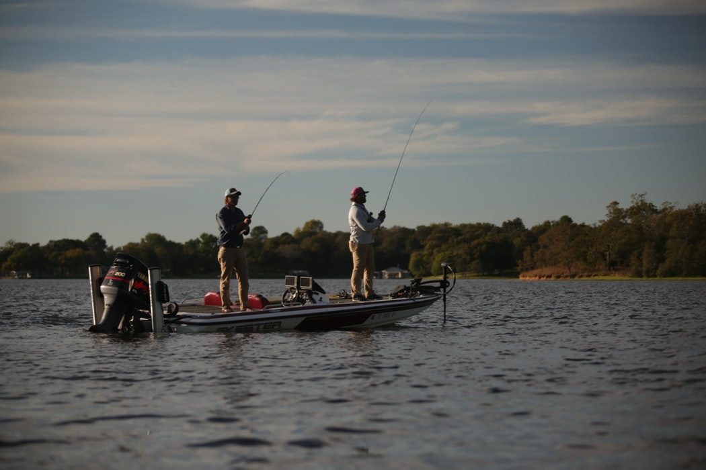
Bass fishing is one of my favorite hobbies. I am actually on the Bass Club here at Chapel Hill. We compete against other schools in two man tournaments accross the country.
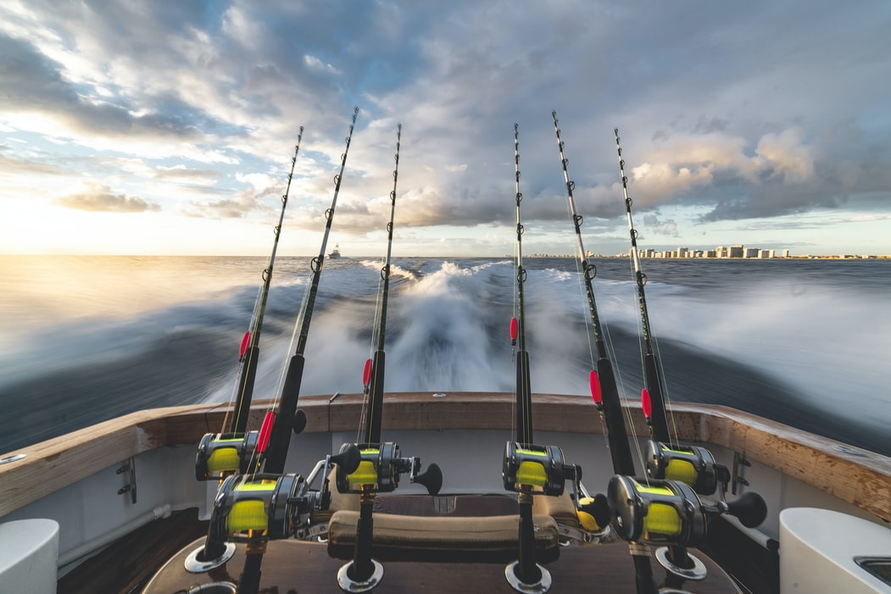
During the Summer I spend alot of my free time fishing off the coast with guided charters. This is one of the easiest ways to catch a lot of big fish!
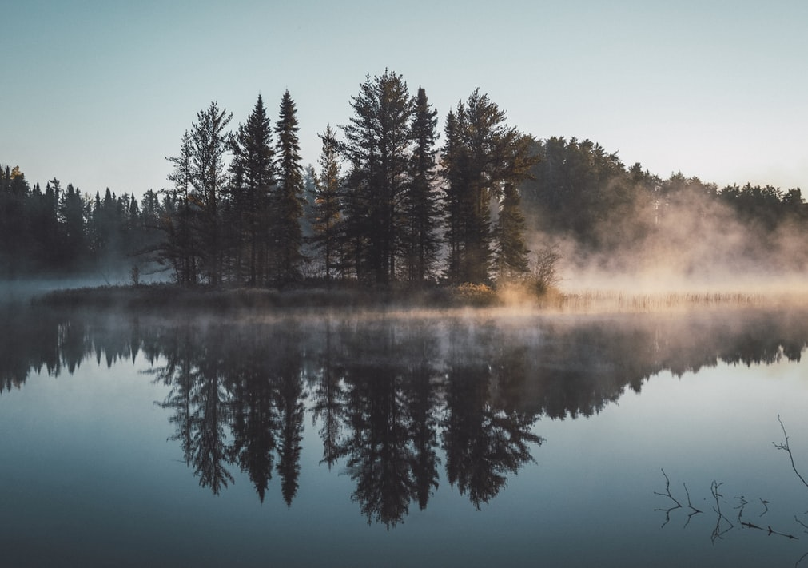
I must say one of my favorite things about fishing early in the morning is the view. I love seeing the sun rise and the fog build up accross the water.
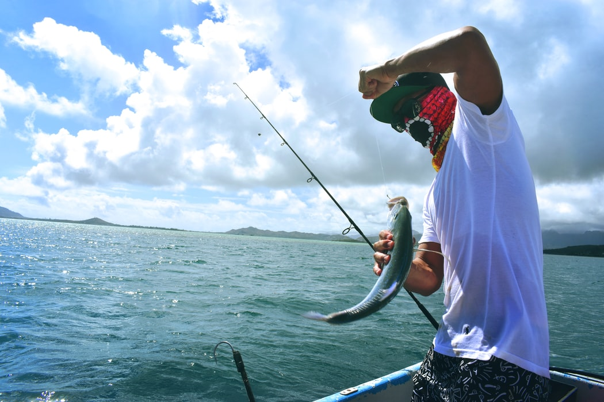
Recreational fishing is becoming a huge industry accross the world. Especially in South America, they have hundreds of charters to select from to catch some exotic fish.
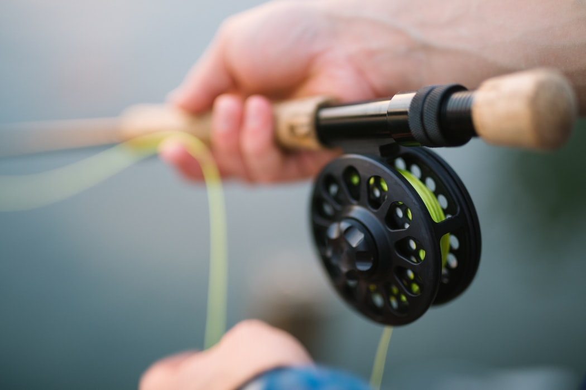
Fly fishing is a very challenging, yet fun way to test waters in mountainous locations. Many anglers fish for trout using fly equipment.
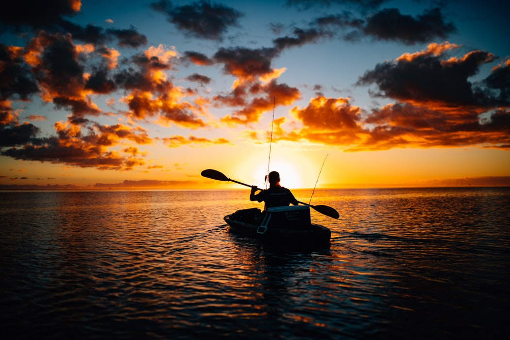
Another fun way to approach the water is through Kayaks. This is one of my favorite ways to fish because you can reach waters that most anglers won't venture to.
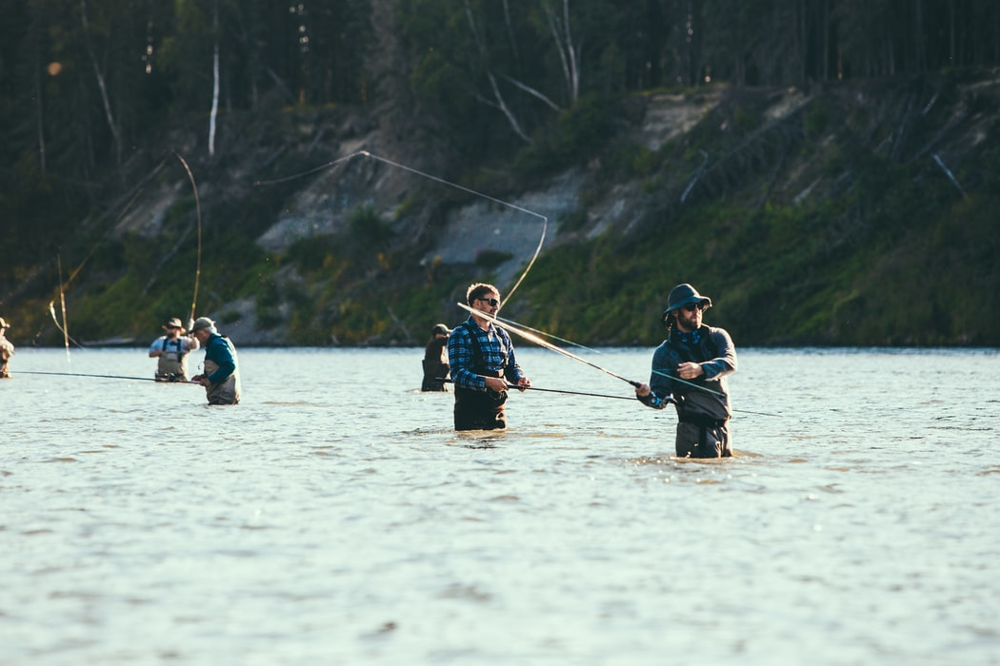
During my summer trip to Oregon, we did a lot of fishing from the river. We had to use large waders to stay dry from the rushing water of the river.

Saltwater fishing is also a very exciting way to catch fish. Most of the fish residing within the ocean are natural born killers, so catching fish isn't the issue. Making sure that you have the correct equipment is the easiest way to insure that you catch fish from the ocean.
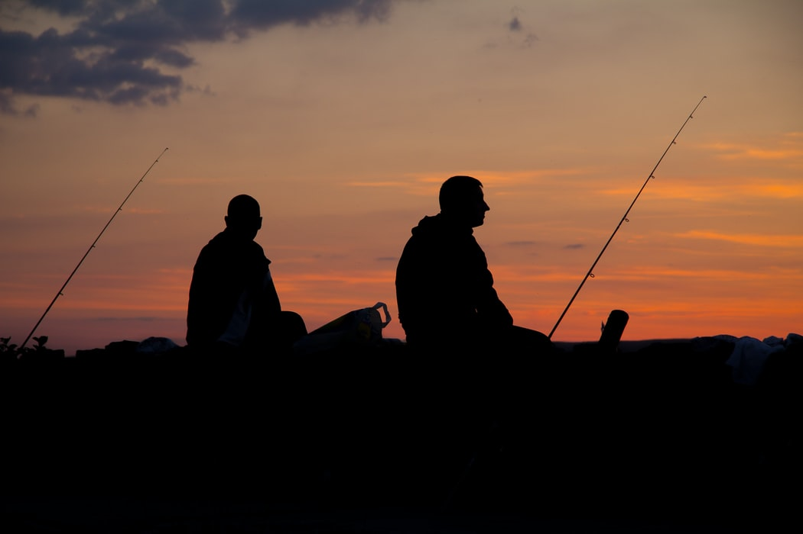
The best thing about fishing for me especially, is bringing someone who has not experienced the fun of fishing like I have. Bringing someone who has never seen or experienced fishing similar to myself is such a joy because I get to see their reaction after landing a monster fish.
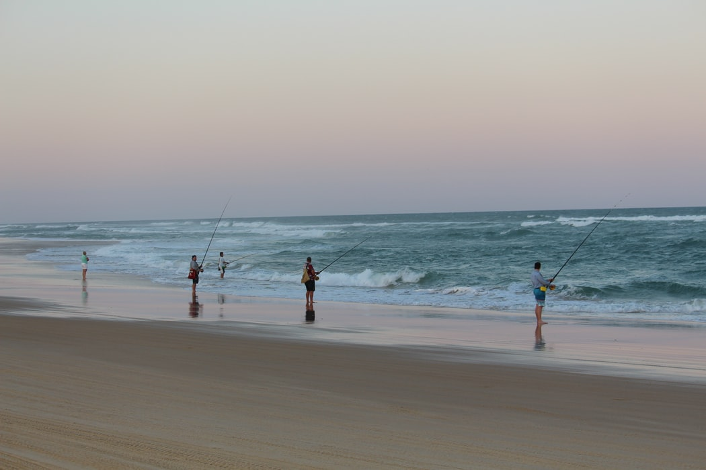
Also, another way to insure a fun fishing day is to bring those friends who don't experience it as much. Having more rods in the water naturally increases your chances of landing a new personal record!
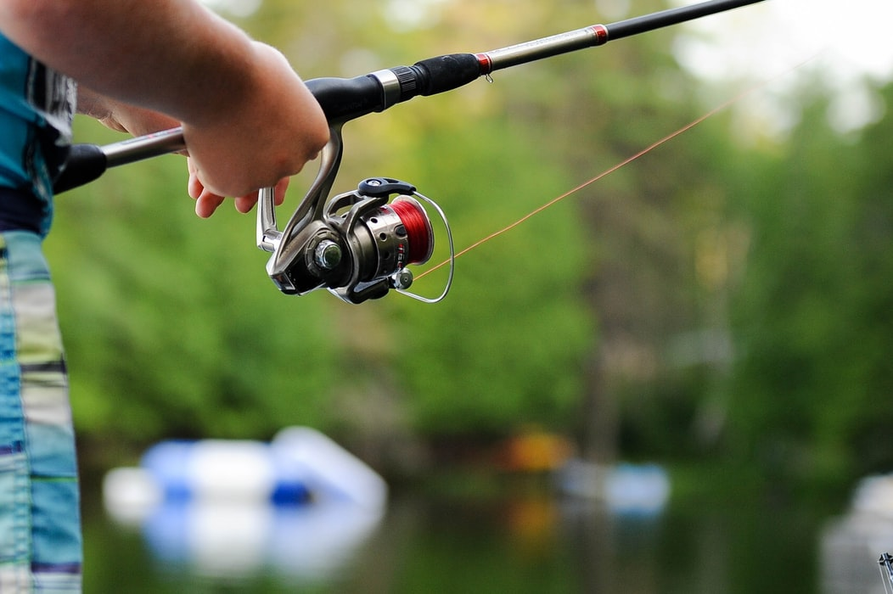
One of the most common fishing rods is known as a "Spinning Rod". This is the rod in the picture above. This is usually the best rod for a beginner to use for all-purpose fishing.
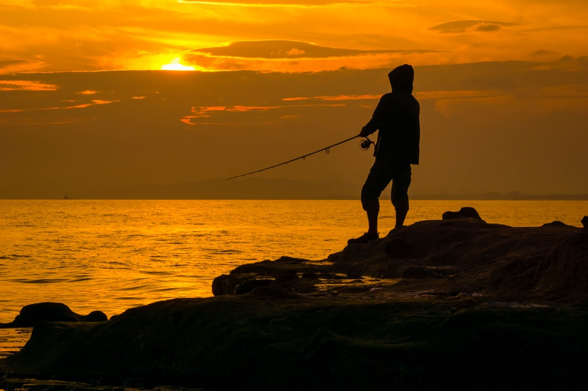
Finally, the sunset! I mentioned how the sunrise was one of my favorite aspects of fishing. Well, so is the sunset. If you see the sunset after a day of fishing, you have either stayed way too long or you had a fantastic day a refused to leave. Either way, these are just added experiences aside of pursuing great catches.